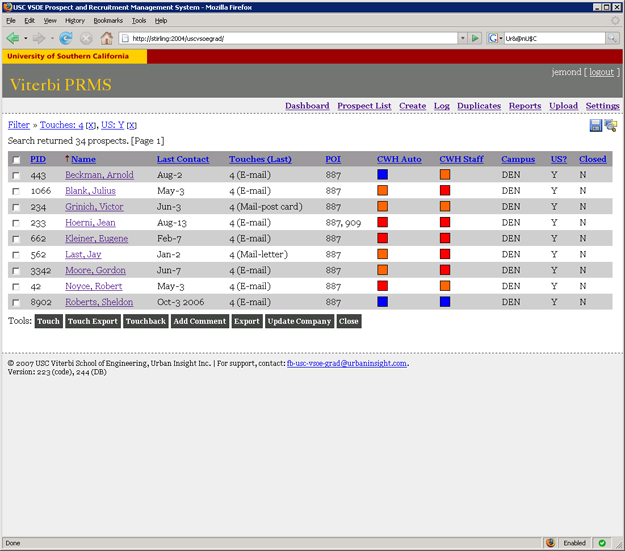
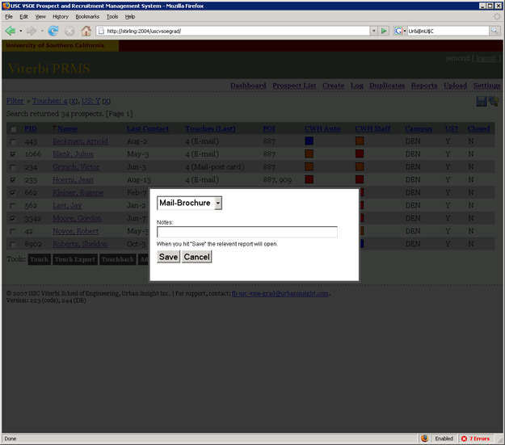
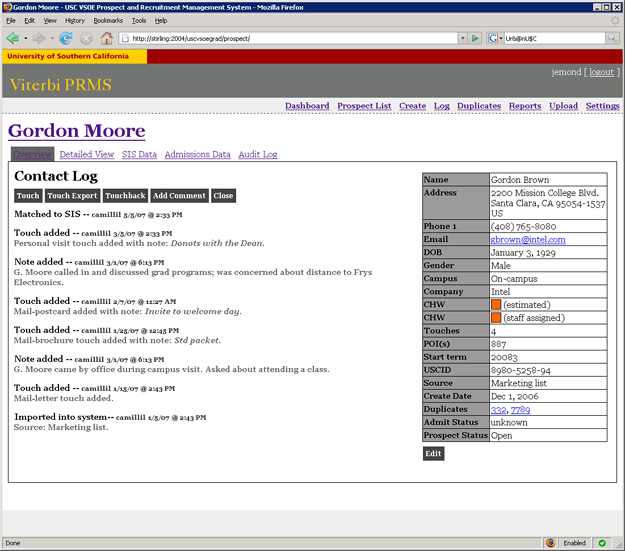
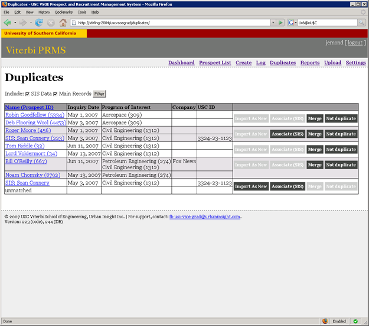

University Prospect Management
The USC Viterbi School of Engineering (VSOE)
Prospect and Recruitment System (PRMS) provides electronic tools for admissions recruiting
at USC's graduate engineering school.
Core features:
- Track and log contact history for prospects;
- Search and build savable filters for later use;
- Ad-hoc reporting detailing prospect source conversion rates over time;
- Bulk process multiple prospects at once; and,
- Instantly upload thousands of prospect records from search service exports.
My role:
- Project manager
- Interface designer
- Application architect
- Database architect
- Technical specification writer
- Client manager
Core technologies:
- Windows ASP.NET 2.0 (C#)
- MS SQL 2005
- Crystal Reports (reporting)
Screenshot Tour (random data shown)
Main search and prospect list page

Bulk edit multiple prospects

Details and contact log for a prospect

Manage duplicates quickly and succinctly
